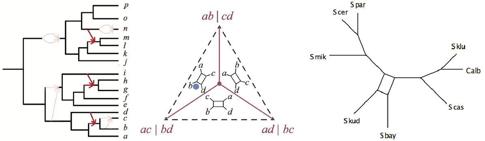
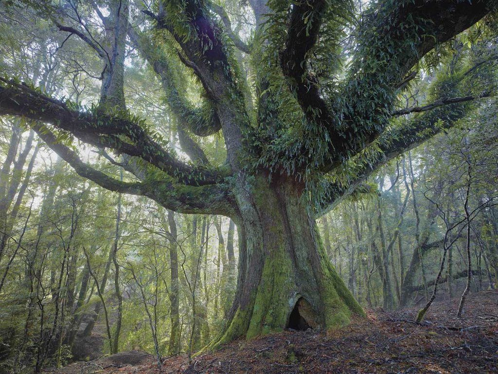
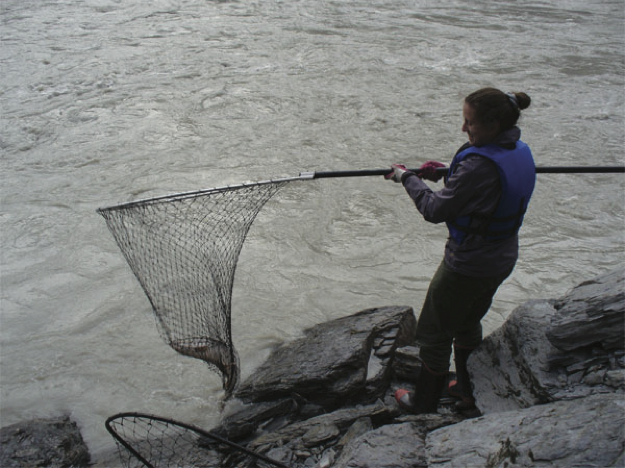

For the last twenty years, my primary research interests have been in phylogenetics, and phylogenetic modeling. I am particularly interested in models of DNA site substitution and the multispecies coalescent model describing the formation of gene trees within a rooted metric species tree or network. Researchers in our group have been funded by both the NIH (R01) and the NSF.
A few years ago now, with post-doc J. Mitchell and graduate student H. Banos, our group implemented a new statistically consistent method of species network inference under the Network Multispecies Coalescent Model. The R package MSCquartets implements some statistical hypothesis tests for testing if quartets on gene trees might have arisen under the NMSC, and constructs a distance table for NANUQ, a species network topology estimator our group developed. (A Nanook, the Inupiaq word for polar bear, is the UAF mascot.) Very recent work has focused on the AIC-BIC model tests and proving that the log-det distance can be used to estimate species trees or networks from sequences under a general model of site substitution on an ultrametric tree or network.
|  |
With graduate student S. Yourdkhani, we proved that the profile mixture model of Susko, Linker and Roger is identifiable using algebraic techniques. She has also worked with J. Rhodes creating a metric quartet distance on gene trees, and is now teaching at the Oregon State University. Former M.S. student Dakota Dragomir is investigating models of evolutionary tree generation and earned both an M.S. Mathematics and M.S. Statistics from UAF. More recently, our group implemented TINNiK (bear berry in Alaska Inupiat), an algorithm for computing a tree of blobs that is consistent under the network multispecies coalescent model. A tree of blobs is the multifurcating tree obtained by contracting to a node all the complicated reticulate structure in a true underlying evolutionary network. |
Currently, with collaborators at NJIT, U Wisconsin, U Hawaii, Delft U, and in France and Japan, we have been working on proving identifiability theorems for classes of networks, and developing and implementing algorithms for inferring level-1 or higher level networks from genomic scale data. Much work is to be done, but this is an exciting focus of current research.
For a list of publications since I became interested in phylogenetics, click here, and visit the software link above for information on software development.
Interestingly, I got involved in mathematical biology, and phylogenetics in particular, as an outgrowth of a teaching project started by J. Rhodes and colleagues. This work resulted in the undergraduate textbook "Mathematical Models in Biology: An Introduction" published by Cambridge University Press in 2004. An electronic solutions manual and a list of known errata is available on request.
| In 2007, while in residence at the Institute for Mathematics and its Applications,
I posed the salmon problem while at one of IMA's workshops. This problem took on a wonderful life of its own.
If you have access to MathSciNet, seach on the phrase 'salmon problem' to follow the thread.
Salmon Problem: Determine the ideal defining the fourth secant variety of P^3 x P^3 x P^3. Some details, including a prize for its solution. Set theoretic version solved! Congratulations to Shmuel Friedland for solving the set-theoretic version of the problem (spring 2010)! Further progress by Dan Bates and Luke Oeding (2010). Still further progress by Friedland, Gross (April 2011). And Claudio Raciu (2012). And by Daleo and Hauenstein (2016). |
 |
{kind=link}
{kind=link}